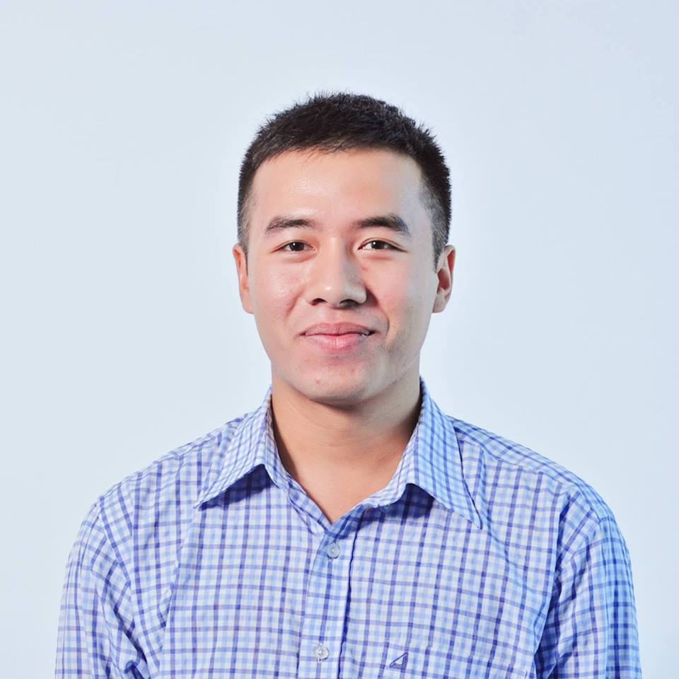

Linh Phan Si
Software Developer
September 7, 1994
Hanoi, Vietnam
+84 34 9914041
Skype: linhps94
Mailbox: linhps.7994@gmail.com
Education
Vietnam – France University
Bachelor of Information & Communication Technology (2012 – 2015)
National Economics University
3 months course in Business Administration (2019)
Languages
Vietnamese (Native or bilingual proficiency)
English (Professional working proficiency)
French (Elementary proficiency)
Experience
Magento Developer at Convert Digital
October 2018 – Present
Convert Digital is an Australian company. I’m doing as a Magento developer here, in Vietnamese office. I build ecommerce sites, such as Puma, Cadbury, Neuw Denim etc and integrate 3rd-party systems into our projects such as AfterPay, ZipPay, Eway, DotMailer etc.
I’m inspired and motivated by my boss with his big dream. He is a fair and honest person. He taught me a lot both in work and in life.
Magento Developer at ShopStack
August 2018 – October 2018 (2 months)
I was just getting started there then I left. It was not much to tell about. It’s a Thailand company which has an office in Vietnam. I went to Thailand once: Great boss, high quality employees, challenge projects, however, I don’t like the management system in the Vietnamese office which caused really bad projects quality.
Project Manager at Ecommage
January 2018 – July 2018 (7 months)
I was really excited to have a new title in my career path - Project Manager. I always wanted to grow my own team.
Ecommage was a startup company with 20 employees. The base level of the employees was very low, the project workflow was ineffective and there were some messed up roles. However, I treated that as an opportunity. I involved in building the organization structure with an Operation Manager. There were some certain positive changes. I’ve learned a lot at Ecommage, mostly management skills.
Magento Developer at SmartOSC
April 2015 – January 2018 (3 years)
Internship
Apr 2015 – Jun 2015 (3 months)
Hello world!
Netatmo (France)
Jul 2015 – Jan 2016 (7 months)
It was the very first project in my career path, built with Magento 1. I was the main developer with 600 hours of work logged; I also held the contact point – communicating directly with the merchant.
American Eagle (USA)
Jan 2016 – Jan 2017 (12 months)
I was working as a dedicated developer. During the time, I joined over a dozen of projects with many professional co-workers coming from many different countries all around the world. Being one of the first programmers in the company working in American market, and one of the first programmers of the company working on Magento 2. I wrote a lot of tutorials to share in our internal confluence.
Lotte (Vietnam)
Jun 2016 – Oct 2016 (5 months)
It was a really huge project with a scope of 30,000 hours. There were at least 50 team members . I joined to help the team to develop sale campaign related features.
Courts (Singapore)
Jan 2017 – Oct 2017 (10 months)
I joined a team with three other senior developers. The scope of the project was around 8,000 hours and it has been released successfully in just 8 months by only 4 of us.
I was the one who came to Singapore to deliver the first phase of the project to client and then collecting new requirements for the second phase.